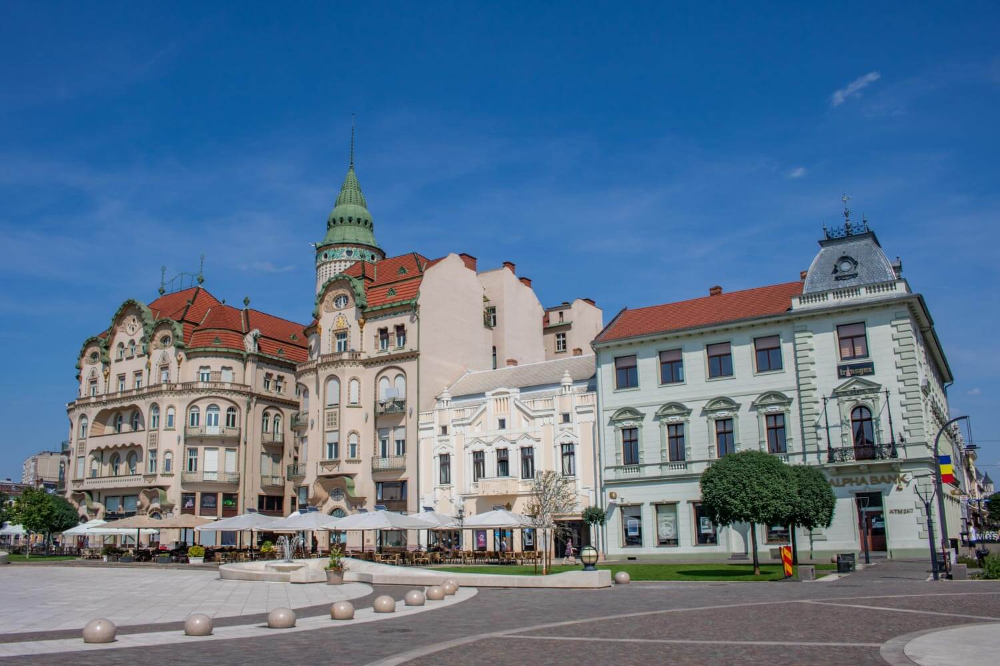
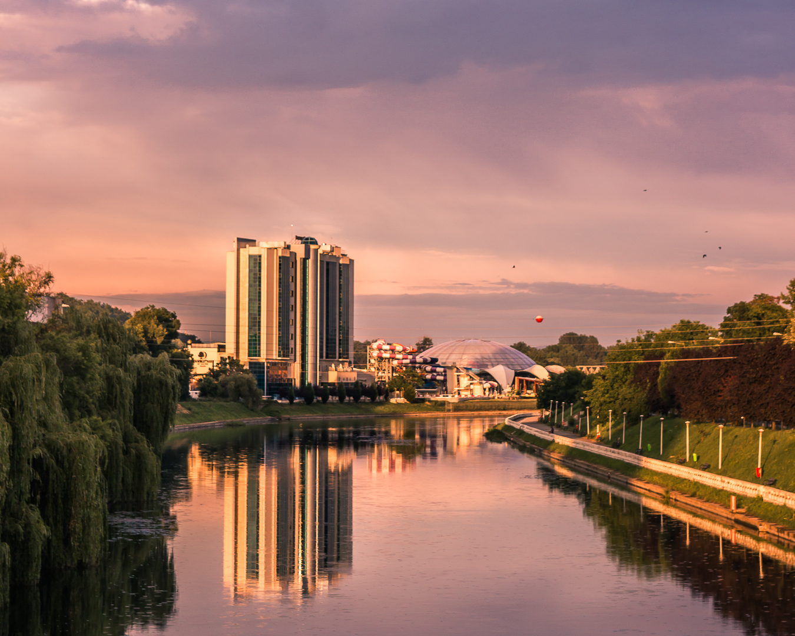
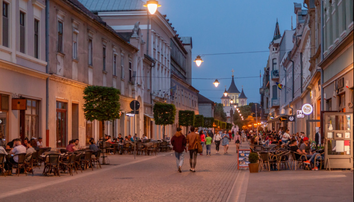
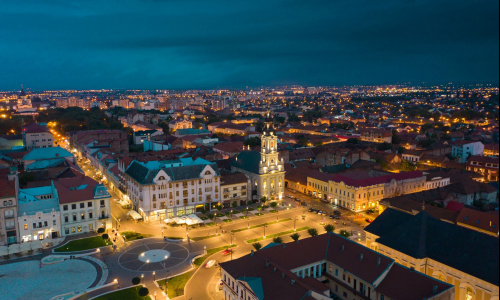
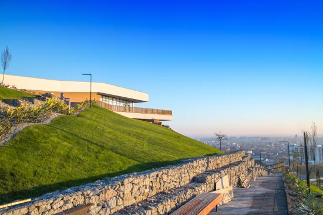

A Glimpse of Oradea



Discover the City
Why Visit Oradea?
- Unique Art Nouveau architecture in the city center.
- Relaxing thermal baths and modern aquaparks.
- Beautiful historic fortress with events and festivals.
- Clean, walkable streets and cozy cafés.
Quick Facts
- 📍 Location: Northwest Romania, near the Hungarian border
- 🏙️ Region: Bihor County
- 🌉 Known for: Art Nouveau, fortress, thermal waters
- 🚉 Easy access by train, car, and Oradea Airport
Photo Highlights


